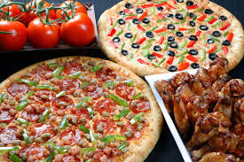
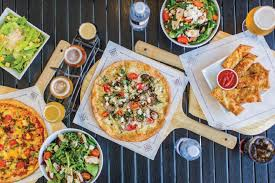
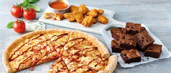

Our Special
Looking for some inspiration for your next homemade pizza or build-your-own pie? This list of awesome pizza topping combinations is guaranteed to have at least one that tickles your fancy. Tried-and-true combinations These classic pizza topping combinations are both field-tested and battle-worn. It has been proven beyond a shadow of a doubt that the following combinations of flavors make for some incredibly delicious pizzas.
Appetizers
Per the dictionary, the word'supreme' is used to describe something “very great or intense.” That seems like the perfect word to describe a giant pizza loaded up with both meats and vegetables! Then again, 'supreme' is also defined as “involving death,” but that definition doesn't seem like it fits as well in this particular scenario. A supreme pizza should be awe-inspiring enough to rule over both the carnivores and the omnivores and, thus, should not be skimped on. Our favorite toppings for a supreme pizza include pepperoni, sausage, olives, mushrooms, tomatoes, peppers, and onions.
What We Do
It's about family and friends old neighbors and new neighbors alike. It's about block parties, cook-outs, camp-outs, and having fun. Smiles, jokes, laughter, enjoyment, good drinks, and great eats. We take pride in and are honored to provide your family with food we enjoy as a family, too. Great ingredients, well-prepared, and carefully assembled into a fun, quick, nutritious meal that you can take pride in baking for your family. That’s what Dogtown Pizza is about. So make an order and make it big. Keep some extra pizzas in the freezer and bake some up anytime. From our family table to yours, thank you for your business. Enjoy! - The Shkulaku Family -